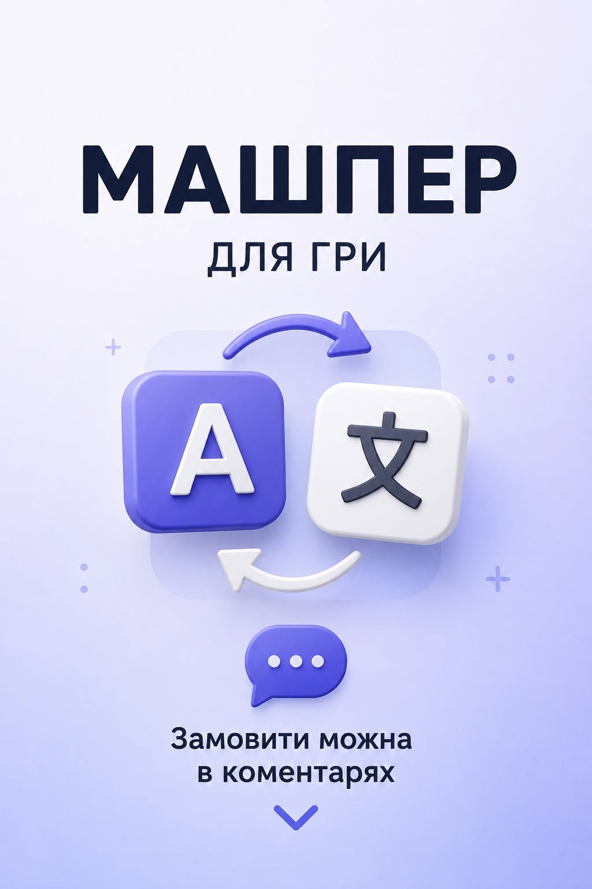

📝 Замовити українізатор

Переклад виконується безкоштовним ШІ з урахуванням усього тексту гри:
спершу аналізується весь текст і формується глосарій (терміни, імена, назви),
далі виконується переклад із його використанням, а потім — мінімальне редагування
очевидних помилок. Мета — готовий український переклад без ручного перекладу кожного рядка.